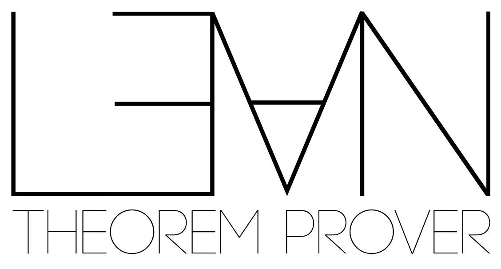

Lean formally checks the algebraic certificate behind the main prime-power EAQECC family theorem; Lean sources with pinned dependencies and kernel/Comparator records are released.
Abstract
LLM-guided program evolution can produce mathematical constructions, but validity, generality, and reproducibility require distinct evidence. We develop a researcher-in-the-loop discovery pipeline that combines program evolution, exact evaluation, mathematical generalization, certified nonexistence checks, and formal proof checking. We apply it to entanglement-assisted quantum error-correcting codes (EAQECCs). Starting from tasks that did not specify a family formula, evolved programs produced finite qubit constructions whose structure researchers generalized to the family $[[n,1,n-1;n-q-1]]_q$ for prime powers $q\ge3$ at $n\ge2q+1$ and for $q=2$ at odd $n\ge5$. Lean checks the algebraic certificate underlying this family. Together with entanglement lifting, the family closes 54 gaps in archived EAQECC tables. The released evidence includes 115 verified code records, ten nonexistence results with checked DRAT proofs, family implementations, and preserved search programs for exact checks and seeded replay. In a controlled cohort of eight paired generation blocks, validation-selected iterative programs achieve success in 46.1% and 31.6% of held-out executions at unseen lengths $n=13,15$, compared with 19.5% and 3.1% for independently generated programs. In this setting, program evolution and researcher analysis turn finite computational discoveries into a proved family with independently checkable evidence.
Problem
LLM-guided program evolution can produce mathematical constructions, but validity, generality and reproducibility each need separate evidence. The application is improving bounds for entanglement-assisted quantum error-correcting codes (EAQECCs).
Approach
A researcher-in-the-loop pipeline combines AlphaEvolve program evolution, exact finite-field evaluation, researcher generalization of discovered codes, SAT nonexistence checks with DRAT proofs, and Lean checking. Finite qubit constructions were generalized to the family [[n,1,n-1;n-q-1]]_q for prime powers q. Lean verifies the algebraic certificate underlying this theorem. An ablation compares iterative evolution with independently generated programs.

Figure 1: The researcher-in-the-loop discovery pipeline.
Results
The family, combined with entanglement lifting, closes 54 gaps in archived EAQECC tables. The release includes 115 verified code records and ten DRAT-certified nonexistence results. Validation-selected iterative programs reach 46.1% and 31.6% held-out success at n=13 and n=15, versus 19.5% and 3.1% for independently generated programs.
Code [[n,k,d_l–d_u;c]]_2
Ours d
Previous reference
[[7,1,5–6;4]]
6
Grassl et al. (2020)
[[9,1,7–8;6]]
8
Luo et al. (2022)
[[12,1,9–11;8]]
11
Luo et al. (2022)
[[15,1,13–14;12]]
14
Luo et al. (2022)
Selected qubit distance gaps closed (previous bounds vs. new distance)